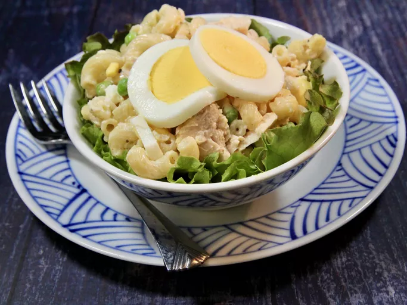

1. Cold Macaroni and Tuna Salad Recipe

1.1. Description
This cold tuna salad is a simple and good recipe that is great
served on those hot summer days. It can even be prepared the
night before so that it is ready and cold when you come home from
work the next day. My husband never ate this until
we got married; now, he requests it every other week in the summer.
You can substitute chicken for the tuna, which is also great.
I serve it on a leaf of lettuce, for looks, with an assortment
of crackers.
Happy eating!
1.2. Ingredients
- 3 large eggs
- 2 3/4 cups macaroni
- 1/2 package frozen English peas
- 2 cans tuna, drained
- 3 tablespoons mayonnaise
- ¼ teaspoon salt
- ⅛ teaspoon ground black pepper
1.3. Steps
-
Place eggs in a saucepan and cover with water.
Bring to a boil, remove from heat, and let eggs stand in hot
water for 15 minutes. Remove eggs from hot water,
cool under cold running water, and peel.
-
Bring a large pot of lightly salted water to a boil.
Add macaroni pasta and cook for 8 to 10 minutes or
until al dente; drain and rinse under cold water.
-
Put frozen peas into a colander and rinse with hot water;
drain well.
-
Place macaroni and peas in a large bowl.
Dice eggs and add to the bowl.
Put tuna in the bowl, flaking it apart.
-
Stir mayonnaise into tuna mixture, a little at a time,
until mixture is moist but not soggy.
Season with salt and pepper and mix one last time.
Cover and refrigerate for a least 1 hour or overnight.